Stage2C.5 · Dark rock foundation Actual website screenshots. Connected baseline on the left; foundation review on the right. Mobile layouts stack vertically. All global lighting, stage assets and navigation are retained.
Capture metadata · Report
desktop 01 hub center
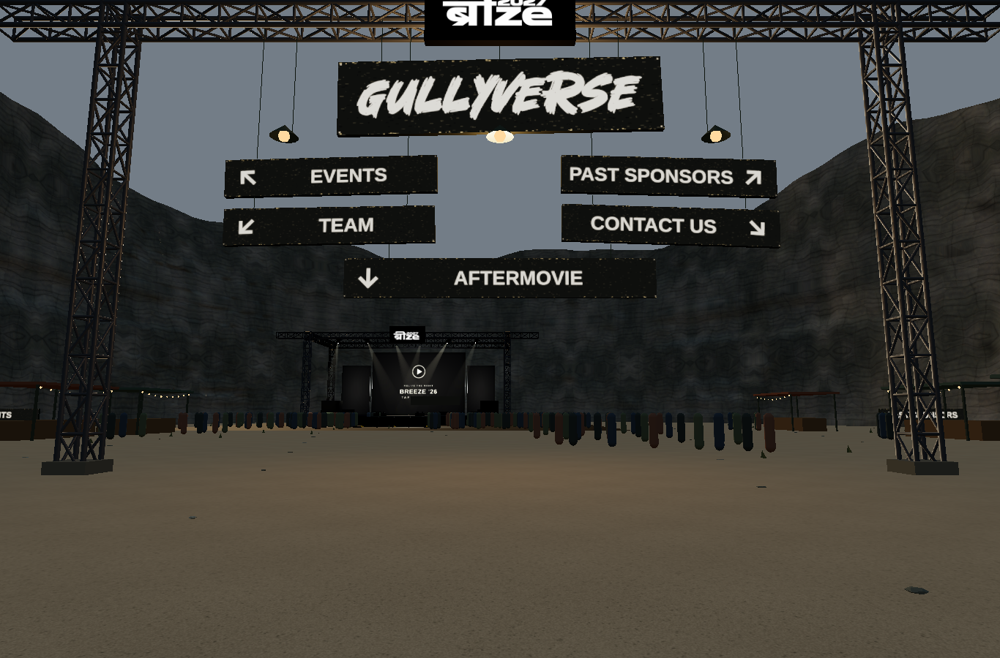
Approved connected Stage2C4 baseline Foundation review · unchanged approved lights
desktop 02 stage facing
desktop 03 left wall
Approved connected Stage2C4 baseline 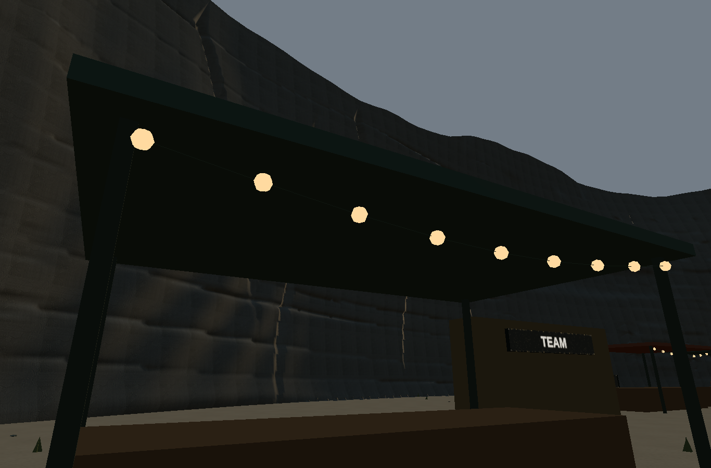
Foundation review · unchanged approved lights
desktop 04 right wall
Approved connected Stage2C4 baseline Foundation review · unchanged approved lights
desktop 05 close wall
Approved connected Stage2C4 baseline 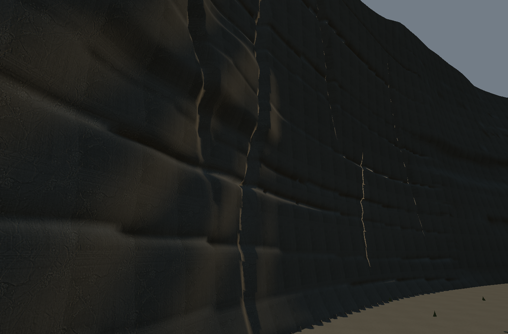
Foundation review · unchanged approved lights
desktop 06 scaffold
desktop 07 aerial map
desktop 08 tunnel exit
desktop 09 stage looking back
Approved connected Stage2C4 baseline 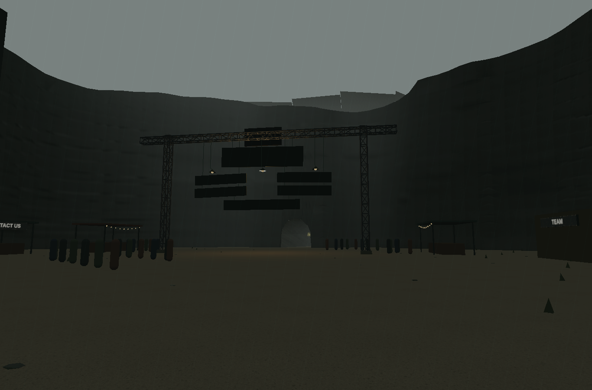
Foundation review · unchanged approved lights
desktop 10 broad face
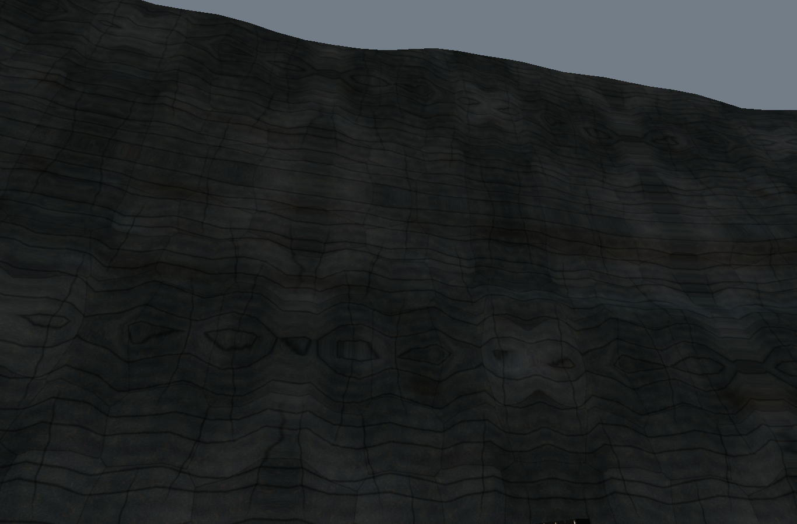
Approved connected Stage2C4 baseline Foundation review · unchanged approved lights
desktop 11 corner
desktop 12 joined regions
desktop 13 fracture close
desktop 14 upper rim
desktop 15 wall foot
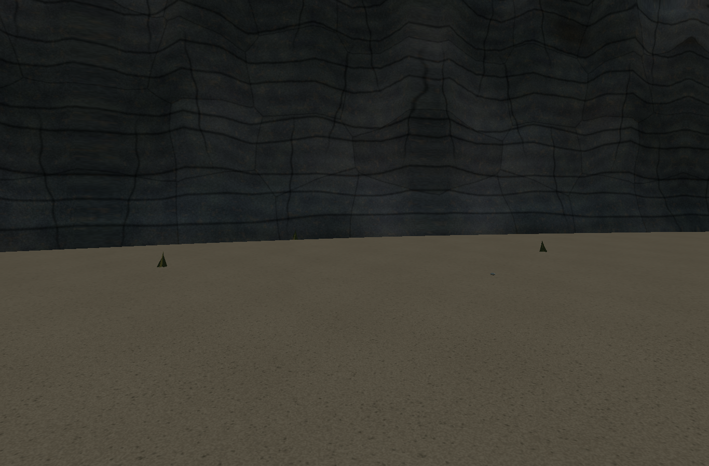
Approved connected Stage2C4 baseline Foundation review · unchanged approved lights
desktop 16 along wall
desktop 17 terrain map height
desktop 18 stage playing
desktop 19 stage restored
desktop 20 regions under stage lighting
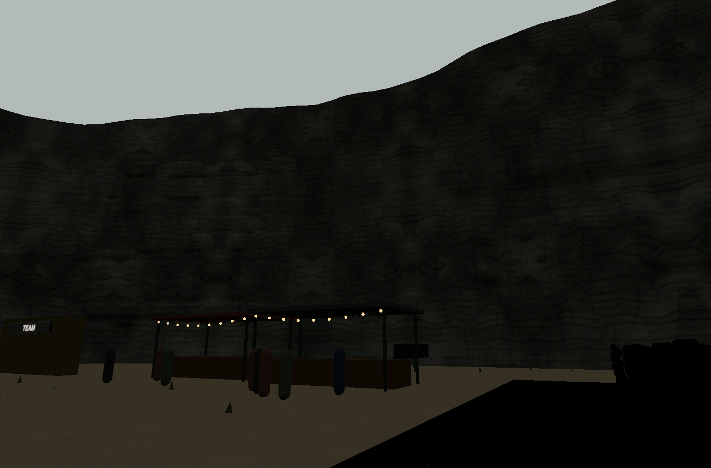
Approved connected Stage2C4 baseline Foundation review · unchanged approved lights
mobile 01 hub center
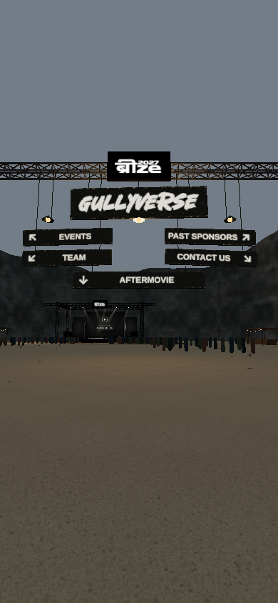
Approved connected Stage2C4 baseline Foundation review · unchanged approved lights
mobile 07 aerial map
mobile 08 tunnel exit
Material, geometric-normal and wireframe diagnostics
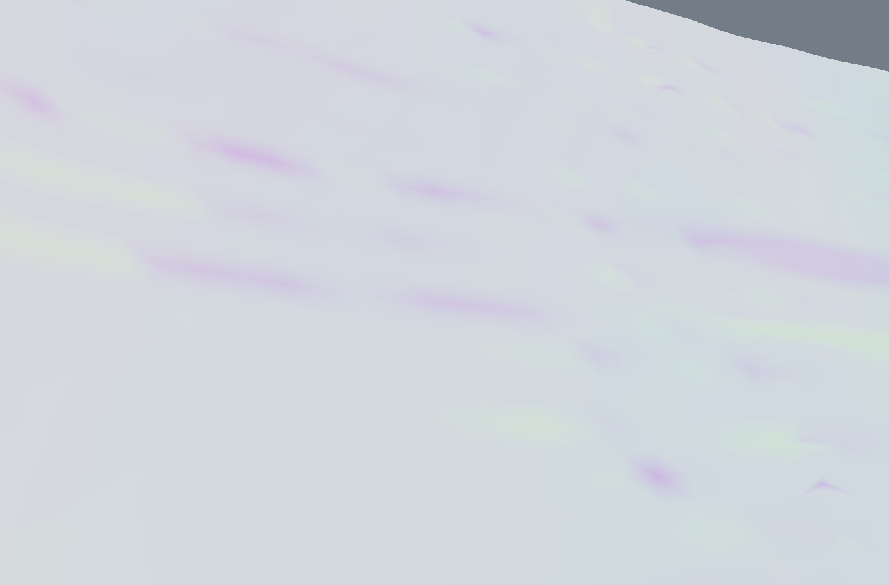
Baseline · diagnostic-geometric-normal Foundation · diagnostic-geometric-normal 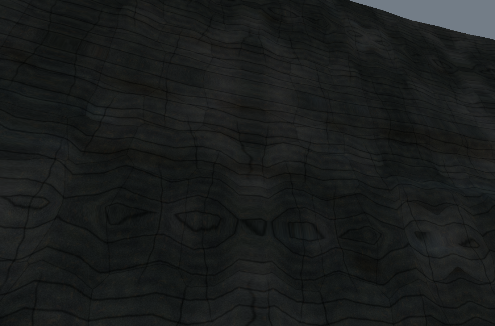
Baseline · diagnostic-no-normal Foundation · diagnostic-no-normal LOD0 / LOD1 / LOD2 · inspection comparisons
inspection-lod0 · one explicitly selected level 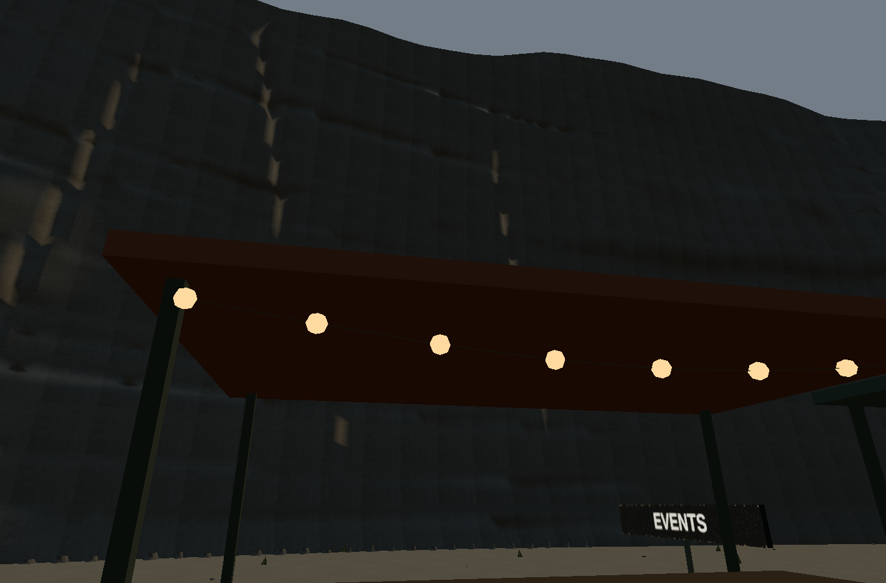
inspection-lod1 · one explicitly selected level 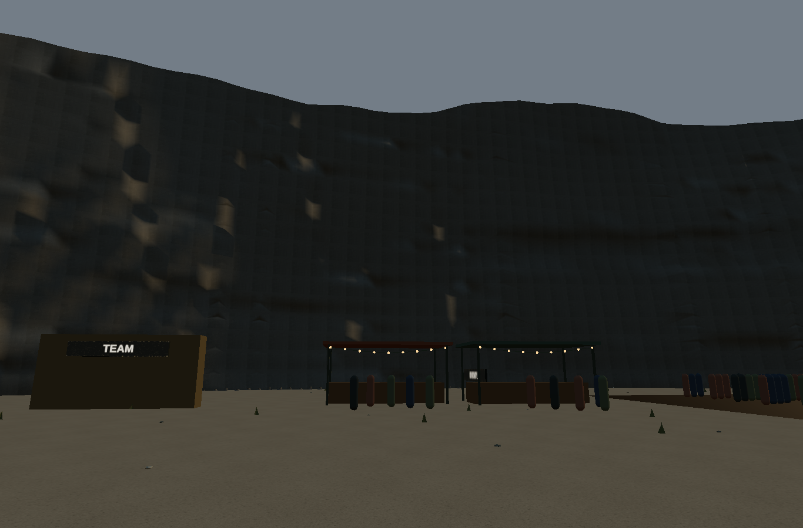
inspection-lod2 · one explicitly selected level Actual browser recordings
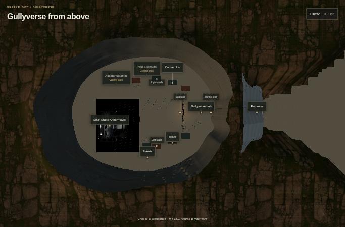
map-ascent · public camera transition 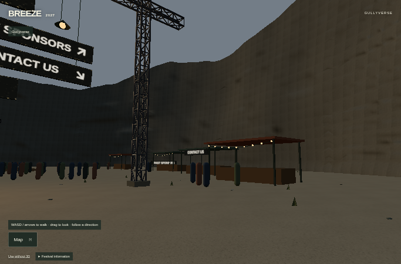
map-descent · public camera transition near-wall-inspection
visitor-walk-and-aerial
References
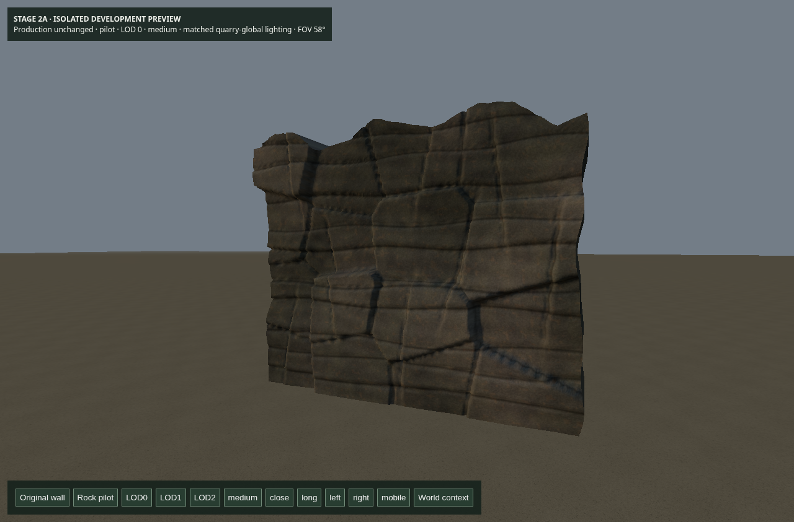
original-stage2a-rock-pilot · reference/source, not acceptance screenshot quarry-open-sky-geometry · reference/source, not acceptance screenshot 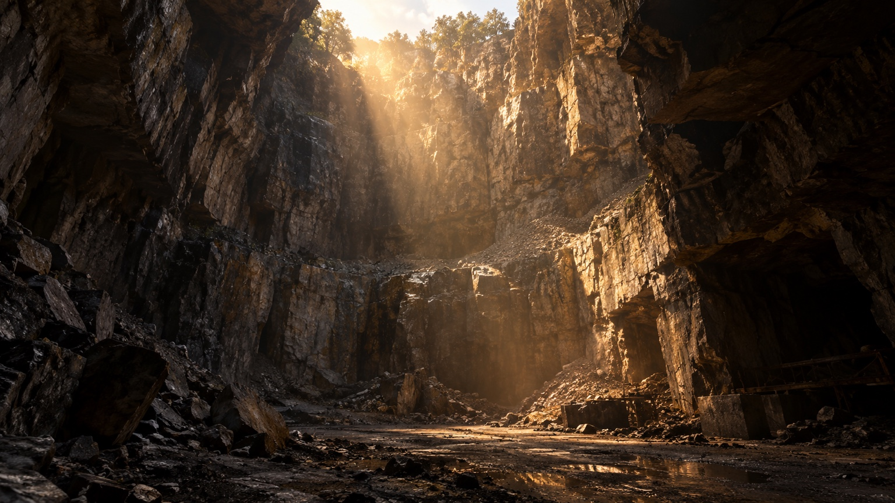
quarry-warm-dappled-light · reference/source, not acceptance screenshot 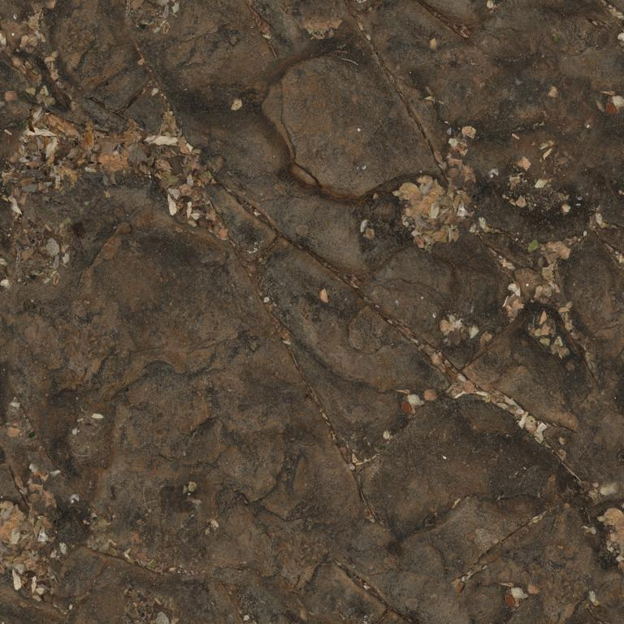
source-rock-contact · reference/source, not acceptance screenshot 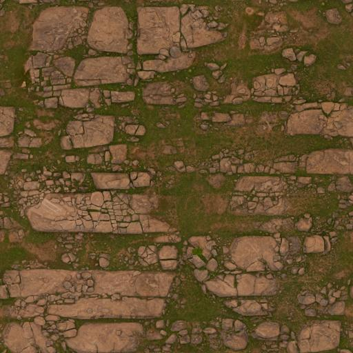
source-terrain-contact · reference/source, not acceptance screenshot